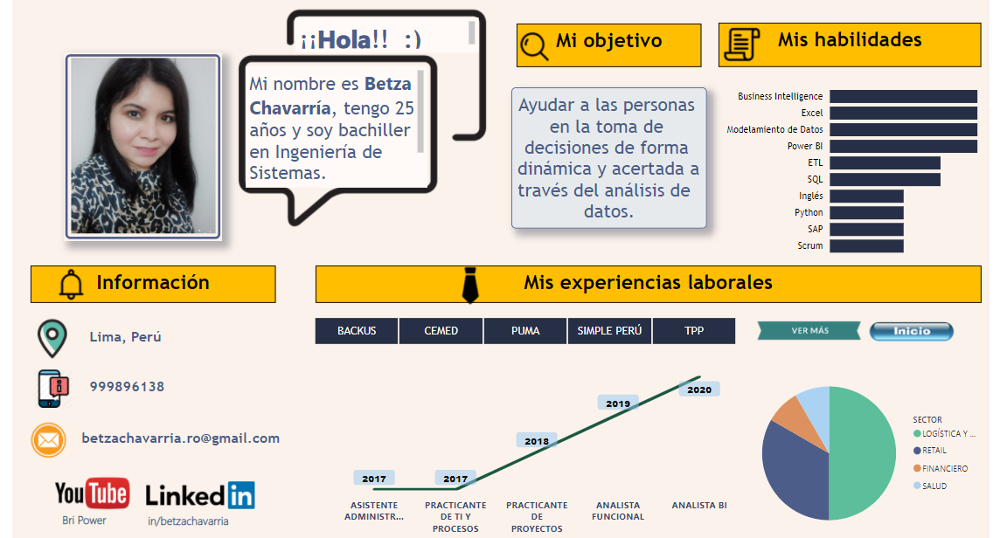
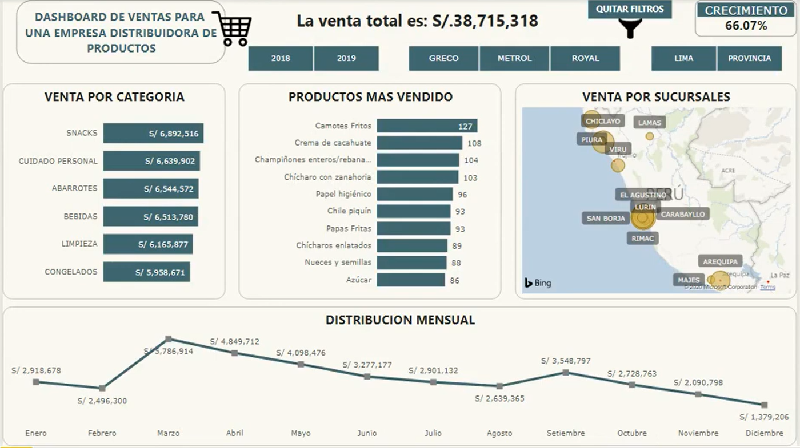
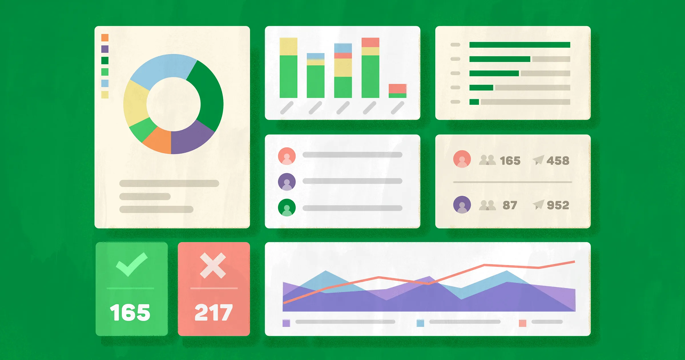

😀¡Hola, bienvenido!, Mi nombre es Betza Chavarría Romero, tengo 25 años, soy bachiller en Ing. de sistemas. Mi experiencia abarcan sectores de logística, retail y parte de consumo masivo. He trabajado en el área de TI y comercial. Me considero una persona muy proactiva, autodidacta que le gusta retarse a si misma para lograr grandes objetivos. Me he estado preparando mucho en cursos y conferencias sobre temas de Data Science, Big Data, Azure, Python, Cloud, ML, Power Automate, sinceramente me gustaría tener la oportunidad de trabajar en algo relacionado a esto, creo que tengo toda la capacidad y las aptitudes para lograrlo. Los perfiles que busco son de Data Science, Data Engineer, Data analytics, BI, con un enfoque retador donde pueda aplicar mucho de estos conceptos. Confío en mí y en lo que puedo lograr. Me das una oportunidad?
Bachiller en Ingeniería de Sistemas con más de 2 años de experiencia trabajando con altos volúmenes de datos, aplicando tecnologías de Business Intelligence y Base de Datos. Tengo experiencia en el área de proyectos para empresas del sector de tecnología, logística, retail y consumo masivo. Entre mis competencias destacan el compromiso, la adaptabilidad, trabajo en equipo y la comunicación eficaz. Tengo cursos en Excel, BI, base de datos y conocimientos de las buenas prácticas Scrum. “Mi objetivo es ayudar a las personas en la toma de decisiones de forma dinámica y acertada a través del análisis de datos.”

Análisis de Datos y Business Intelligence
Microsoft Power BI es un servicio de análisis empresarial de Microsoft, su objetivo es proporcionar visualizaciones interactivas y capacidades de inteligencia empresarial con una interfaz lo suficientemente simple como para que los usuarios finales creen sus propios informes y paneles, en él podemos usar técnicas como ETL (Extraer, Transformar y Cargar) y crear un excelente Modelo de Datos, con una gran cantidad de información (Bases de Datos, tablas, relaciones, tipos de Datos, Filas, registros, y cálculos con el lenguaje DAX, para crear visualizaciones o dashboards con gráficos dinámicos e interactivos, con paneles que agilizan la toma de decisiones en las Empresas.)
Microsoft Power BI es uno de los programas con tecnologías de Business Intelligence más robusto en el mercado, y al mismo tiempo es uno de los más baratos ¡incluso gratuito! Cualquiera puede iniciar a desarrollar reportes con visualizaciones interactivas gratis. Si eres dueño de un negocio, gerente de un departamento, o simplemente tienes interés en analizar y dar seguimiento a tus actividades y objetivos , entonces esta Herramienta es para ti.
Proyectos Business Intelligence en Power BI
📊 PRESENTACION PERSONAL Y PROFESIONAL
Aquí dejo el link de mi Dashboard con Presentacion Personal, Profesional, y Mis Habilidades, asi como mi Experiencia Personal
Autor: Betza Chavarría Romero
📊 SISTEMA DE VENTAS PARA UNA DISTRIBUIDORA DE PRODUCTOS
El reportE de ventas mide y monitorea el rendimiento de las acciones comerciales llevadas a cabo por el departamento de ventas.
Autor: Betza Chavarría Romero
📊 DASHBOARD DEMO PARA RELLNO
Dashboard de Relleno, para completar con proyectos reales.
Autor: Betza Chavarría Romero
Te Ayudo A Solucionar Problemas, a Transformarlos en Soluciones y oportunidades, Si necesitas mi ayuda con algún proyecto, que quieras llevar a cabo, contáctame, buscame y sígueme en mis Redes Sociales